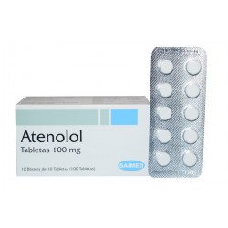

Atenolol
Atenolol ဆေးက သွေးပေါင်ကျ ဆေးအမျိုးအစား အများကြီးထဲမှ Beta blocker အမျိုးအစားဖြစ်ပါတယ်။ နှလုံးနဲ့သွေးကြောပေါ်မှာ အလုပ်လုပ်တဲ့ Epinephrine ကိုတားဆီးပြီး သွေးပေါင်ကျစေတဲ့ အာနိသင်ရှိပါတယ်။
ဆေးအသုံးဝင်ပုံ
- Atenolol ဆေးကိုတစ်မျိုးတည်း ဒါမှမဟုတ် တခြားဆေးတွေနဲ့ တွဲပြီး သွေးပေါင်ထိန်းပေးတဲ့နေရာမှာ အဓိကသုံးပါတယ်။
- သွေးမတက်အောင် ထိန်းပေးထားလို့သွေးတိုး ရောဂါရဲ့နောက်ဆက်တွဲဖြစ်တဲ့ လေဖြတ်၊ နှလုံး၊ ကျောက်ကပ် ရောဂါကို ကာကွယ်ပေးပါတယ်။
- နှလုံးရောဂါကြောင့်ရင်ဘတ်အောင့်ရင်လည်းသုံးလို့ရပါတယ်။
ဆေးအသုံးပြုပုံ
- တစ်နေ့ တစ် ကြိမ်ကနေ နှစ် ကြိမ် သောက်ရပါတယ်။
- ဆေးကို ပန်းသီး၊ လိမ္မော်သီးဖျော်ရည်နဲ့ တွဲသောက်ရင် ဆေးအရှိန်ကျစေလို့ မသောက်ရပါ။
- သွေးဖိအားထိန်းနိုင်ဖို့ ဆေးကို အမြဲပုံမှန် သောက်ရပါမယ်။
- နှလုံးရောဂါကြောင့် ရင်ဘတ်အောင့်တာ ကာကွယ်ဖို့ ဆေးပုံမှန်သောက်နိုင်ပေမယ့် အရမ်းဆိုးရင်တော့ သိပ်အသုံးမဝင်ပါဘူး။
- နှလုံးကြောင့် ရင်ဘတ်အောင့်တာတွေမှာ Nitroglycerine လျှာအောက်ငုံဆေးပြားတွေကို ပိုသုံးပါတယ်။
- ဆေးအရှိန်ရပြီး သွေးပေါင်ပုံမှန်ထိန်းနိုင်ဖို့ ဆေးကို တစ်ပတ်လောက် ပုံမှန်စွဲသောက်ဖို့ လိုပါမည်။
- ဆေးသောက်တာကြာပြီး သွေးပေါင်မထိန်းနိုင်ရင်တော့ ဆရာဝန်နဲ့ပြန်တိုင်ပင်ရပါမယ်။
ဘေးထွက်ဆိုးကျိုးများ
- ခေါင်းမူး၊ ခေါင်းကိုက်၊ ပျို့အန် ပင်ပန်းနွမ်းနယ်တာတွေ ဖြစ်တတ်ပါသည်။
- ခေါင်းမူးတာ သက်သာစေဖို့ အထိုင်အထကို ဖြည်းဖြည်း လုပ်ပေးရပါမည်။
- ခြေ၊ လက်ကို သွေးရောက်နှုန်းနည်းစေတဲ့အတွက် ခြေဖျား၊ လက်ဖျား အေးစက်နေတတ်ပါသည်။
- ဆေးလိပ်သောက်ရင် ဆေးရဲ့ ဘေးထွက်ဆိုးကျိုးပိုများလို့ ဆေးလိပ်ဖြတ်ရပါမည်။
- နှလုံးခုန်နှူန်းနှေးခြင်း၊ သတိမေ့ခြင်း၊ ခြေသည်းလက်သည်းပြာနှမ်းနေခြင်း၊ စိတ်ဓာတ်ကျခြင်းများ ဖြစ်ရင်ဆရာဝန်နဲ့ သေချာပြသင့်ပါတယ်။
- ဆေးကို နှလုံးရောဂါမှာ သုံးပေမယ့် တခါတလေ ဆိုးကျိုးအနေနဲ့ နှလုံးရောဂါကို ပိုဆိုးသွားစေတတ်ပါတယ်။
- ခြေထောက်ဖောရောင်ခြင်း၊ အမောဆို့ခြင်းများဖြစ်လျှင် နီးစပ်ရာဆေးခန်းကို အမြန်ဆုံးသွားပြပါ။
သတိပြုရန်အချက်များ
- အရင်တုန်းကဆေးမတည့်တာဖြစ်ဖူးရင်၊ ကျောက်ကပ်၊ ပန်းနာရင်ကြပ်၊ နာတာရှည်လေပြွန်ရောင်၊ ခြေလက်တွေကို သွေးအရောက်နည်းသော Raynaud’s ရောဂါ၊ နှလုံးရောဂါများရှိရင် ဆရာဝန်နဲ့ ကြိုတင်တိုင်ပင်ဆွေးနွေးရပါမည်။
- ဆီးချိုကျသွားရင် ခံစားရမည့် လက္ခဏာတွေက မသိသာတော့တာကြောင့် ဆီးချိုသမားတွေ အထူးသတိထားဖို့လိုပါမည်။
- ဆေးကြောင့် ဆီးချိုထိန်းရခက်နိုင်လို့ ဆရာဝန်နဲ့ သေချာတိုင်ပင်ပြီး ဆီးချိုဆေးသောက်ရပါမည်။
- ကိုယ်ဝန်ဆောင်သည်များ ဒါမှမဟုတ် ကလေးယူရန် တိုင်ပင်နေသောသူများလည်း ဆေးမသောက်ခင် ဆရာဝန်နဲ့ အရင်တိုင်ပင်ရပါမည်။
ဆေးအာနိသင်
- သွေးကျဆေးနဲ့ တခြားဆေးများ တွဲသောက်လျှင် ဆေးအာနိသင် ပြောင်းအလဲ ရှိနိုင်ပါသည်။
ဆေးသောက်များသွားခြင်း
- နှလုံးခုန်အရမ်းနှေးသွားလျှင်၊ မူးလျှင်၊ အမောဆို့လျှင်၊ သတိမေ့လျှင် အန္တရာယ်ရှိသောကြောင့် ဆေးရုံကိုသွားပြရပါမည်။
- Atenolol ဆေးသောက်နေစဉ် သွေးပေါင်နဲ့ ဆီးချိုကို အမြဲပုံမှန်စစ်ဆေးသင့်ပါသည် လေ့ကျင့်ခန်းလုပ်ခြင်း၊ အစားထိန်းခြင်း၊ စိတ်ဖိစီးမှူလျှော့ချခြင်းများနှင့် တွဲလုပ်လျှင် ဆေးရဲ့အာနိသင်အကောင်းဆုံး ဖြစ်ပြီး ပုံမှန် သွေးထိန်းနိုင်ပါလိမ့်မည်။
Source– ဒေါက်တာ အိမ့်ချယ်ရီ